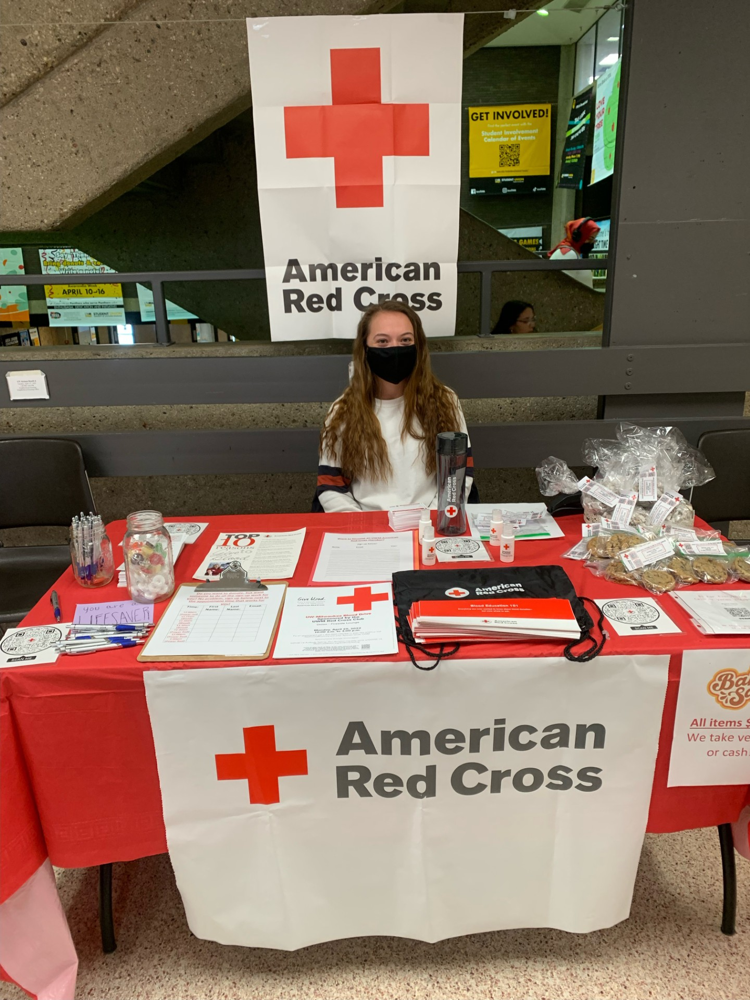
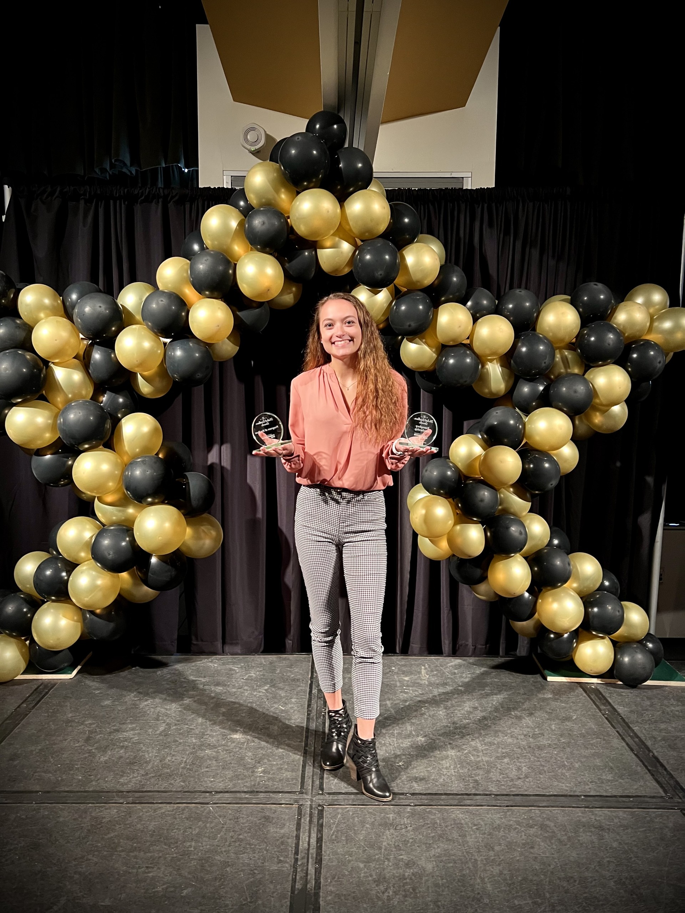

As your MSB class president. I will strive to accurately and fairly represent all MSB students.
I believe that I have already shown my qualities as a leader through sharing helpful resources and my willingness to engage with all classmates.
Additionally, I know I can be a successful president, as I have plenty of leadership experience.
At my undergraduate school, I was the head of the committee to plan the largest student involvement event, with an attendance of over 7,000 students annually.
On top of that, I was the president of the Red Cross Club at my undergrad, overseeing all events and club coordination for over 200 members.
In these roles, among many others, I have had the chance to speak with authority figures and crowds as large as 10,000, making me very comfortable with speaking in different settings.
Finally, I have already established a rapport with many faculty and staff, as well as many classmates.
As a result of all these experiences, I know I can be a successful president and work to make our experience at ACHE even better!
My Experience

Red Cross
I was a member of the Red Cross Club at my undergrad for 3 years.
My second year I was the Vice-president and my third year I was the president of the club. As the president I was in charge of overseeing all events and club coordination for over 200 members.
Here I am recruiting volunteers for the national Red Cross organization and donors for our blood drive.
Pantherfest
Me and the other members of the Pantherfest planning committee, talking on stage before the concert.
As the MSB president, I will have to make a speech at the celebratory brunch before graduation. As seen here I have experience giving speeches to very large crowds.

UWM Student Excellence Awards
Recipient of a Student Excellence awards for my work on the Pantherfest planning committee: Program of the year award and Exemplary leadership award, at the University of Wisconsin-Milwaukee.
About Me
Hi, I am Sommer. I was born and raised in West Bend, Wisconsin - a town about an hour north of Milwaukee. I grew up in a large family, being the youngest of 5 siblings! Although I now live far away, my siblings and I are still close! I also have two cute little nieces that are 1 and 4 years old!
I went to West bend East high school, where I played volleyball, basketball and track. I still enjoy playing volleyball once a week, but do not play basketball or run much anymore. I graduated from high school in 2019.
For college I went to the University Of Wisconsin Milwaukee, where I majored in Biology and got a minor in chemistry. During my breaks from school, I worked at a Parks department in the city where I grew up, where I was able to work with some of my siblings.
While in college, I was involved with many clubs and also spent my free time volunteering at a free clinic and as a tutor and mentor for young girls at a local community center.
Additionally, I did research working with zebrafish looking at MYH genes involvement in development, and how specific mutations in these genes altered development. I graduated From UWM in December of 2022.
After graduating, I worked as an EKG tech at a hospital in Milwaukee for a few months. Then, in July of last year, my boyfriend, Dalton, and I moved down here to Fort Smith with our two cats (Dalton works as a software engineer and made this website).
Last August, we got our first dog, Bailey. This past spring, we decided one crazy dog wasn't enough and got another puppy, Bear. They are both German Shorthaired Pointers. Yes, they do hunt, but there are not a lot of upland birds around here so we can really only go hunting with them when we go back to Wisconsin.
After this year, my plan is to go back to the DO program at ARCOM. I am not sure what I want to specialize in, as I have a very open mind to most things. I have always had an interest in pediatrics, but a lot of specialties sound interesting to me, so I don't want to make my mind up yet!
None of us have much of it, but in my free time I like to go on bike rides, play with my dogs, and play video games with my boyfriend. I also enjoy reading, but sadly have not had time to read in a while!